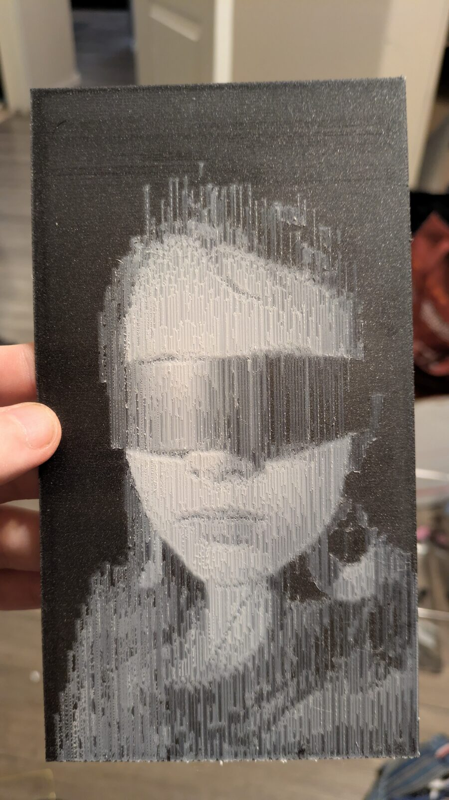
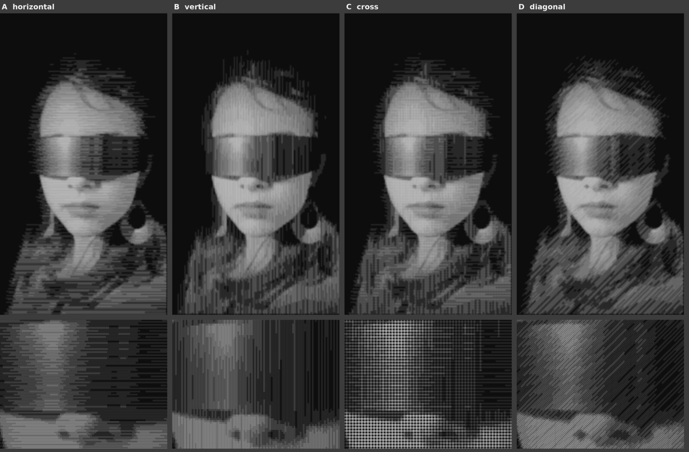
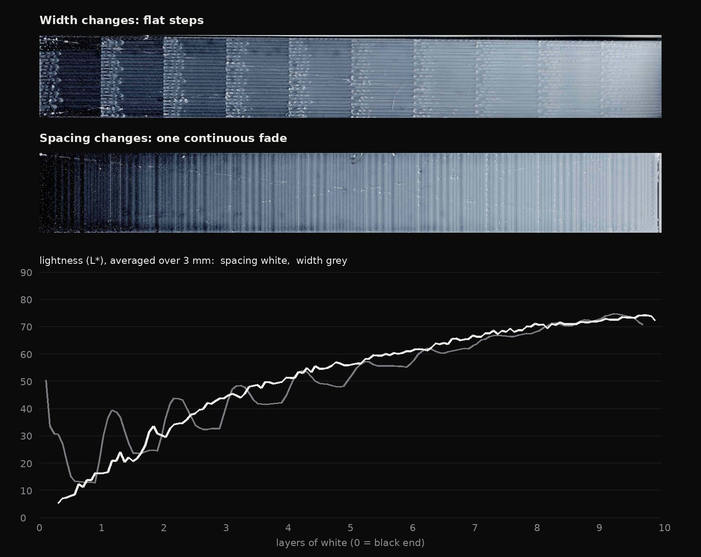
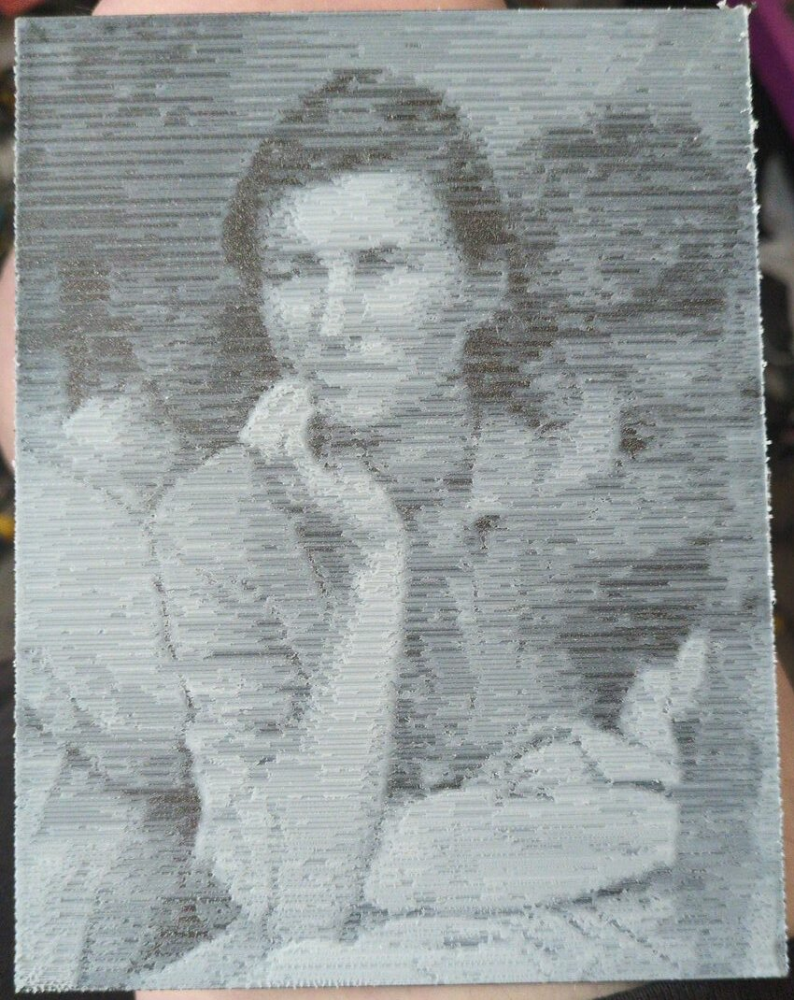
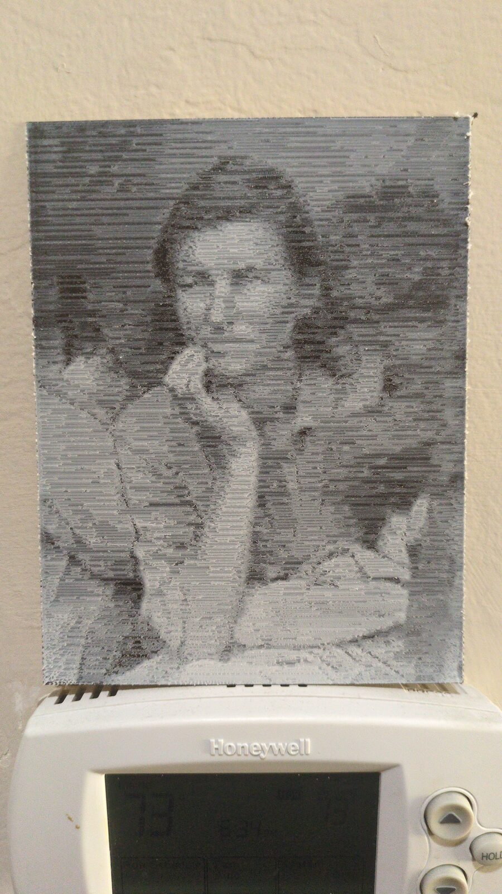
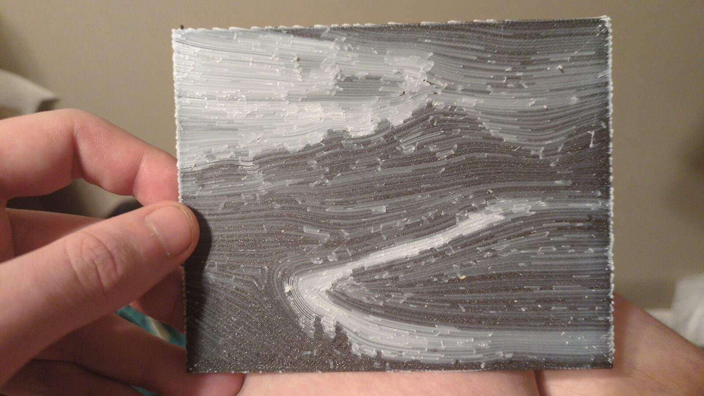

Zingerpaint

Zingerpaint turns a photograph into a two-colour 3D print. Thin white lines over black: where the picture is bright the white stacks thicker, so the light parts stand forward and the dark parts recede.
Make oneIt all runs in this page: your photo never leaves your computer. You bring the slicer; Zingerpaint writes the white.
No photo handy?
min_layer_height) to 0.04..gcode) or the sliced plate (.gcode.3mf).
You get the same kind back, so a .gcode.3mf can go straight to a Bambu printer.Look at it in your slicer’s G-code preview before you print it.
Your print appears here, line by line.
Every 0.47 mm line of white the printer will lay, toned by the measured curve. Point at it to look closer.
Not ten steps. Each 0.04 mm layer of white keeps or skips its lines by the picture’s tone, so the greys run smoothly from black to pale.
The brightest parts are the thickest. Lit from the front, the relief catches light exactly where the picture is light — no backlight needed.
Horizontal, vertical, crosshatched, diagonal, or flowing with the image. The lines are the drawing; you pick the hand.
Tone is calibrated from a printed test strip read on a flatbed scanner, then every photo is mapped through that measured curve.
A last pass of the hot nozzle rides the surface at each spot’s own height, laying down nothing, and smooths it.
Works on top of a normal slicer’s output. Tested on a Bambu Lab A1 with the AMS lite, a 0.4 mm nozzle and two spools.
The same photograph, four ways. The direction of the lines changes what the picture feels like: vertical lines make her look like she is materializing.

At 0.04 mm the nozzle lays the same width of line whatever you ask for, so making lines wider can’t make a grey. Zingerpaint changes how many lines there are instead. The calibration strip shows the difference: one continuous fade.



